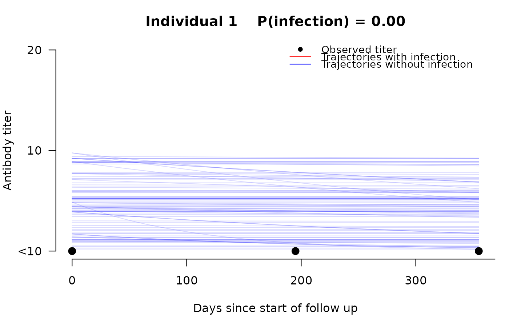

For a single individual, draws posterior-sampled antibody trajectories overlaid on observed HAI titers. Red lines show trajectories where infection occurred; blue lines show trajectories without infection. Matches the visualization style of Figure 1B in Tsang et al. (2022).
Usage
plot_trajectory(
fit,
id = 1,
subjects = NULL,
n_samples = 100,
main = NULL,
col_infected = NULL,
col_uninfected = NULL,
show_legend = TRUE,
...
)Arguments
- fit
A
seroreconstruct_fitorseroreconstruct_jointobject.- id
Row index (integer) or subject identifier to plot. Numeric values in the valid row range (1 to N) are treated as 1-based row indices. Numeric values outside that range are looked up in
subject_idsorsubjectsif available. Non-numeric values are always looked up by subject identifier.- subjects
Optional vector of subject identifiers aligned with fit rows. Use this when
subject_idswas not provided at fitting time. Example:subjects = inputdata$subject_id.- n_samples
Number of posterior samples to draw. Default 100.
- main
Optional plot title. If
NULL, a default title with the individual index and posterior infection probability is generated.- col_infected
Color for infected trajectories. Default semi-transparent red.
- col_uninfected
Color for uninfected trajectories. Default semi-transparent blue.
- show_legend
Logical; whether to draw a legend. Default
TRUE.- ...
Additional graphical parameters passed to
plot().
Examples
# \donttest{
fit <- sero_reconstruct(inputdata, flu_activity,
n_iteration = 2000, burnin = 1000, thinning = 1)
#> 1000
#> MCMC complete in 29 seconds. Use summary() to view estimates.
plot_trajectory(fit, id = 1)

# }